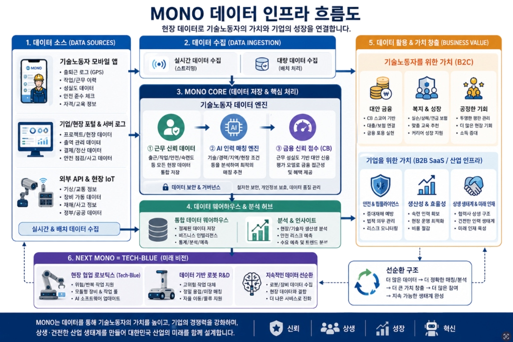
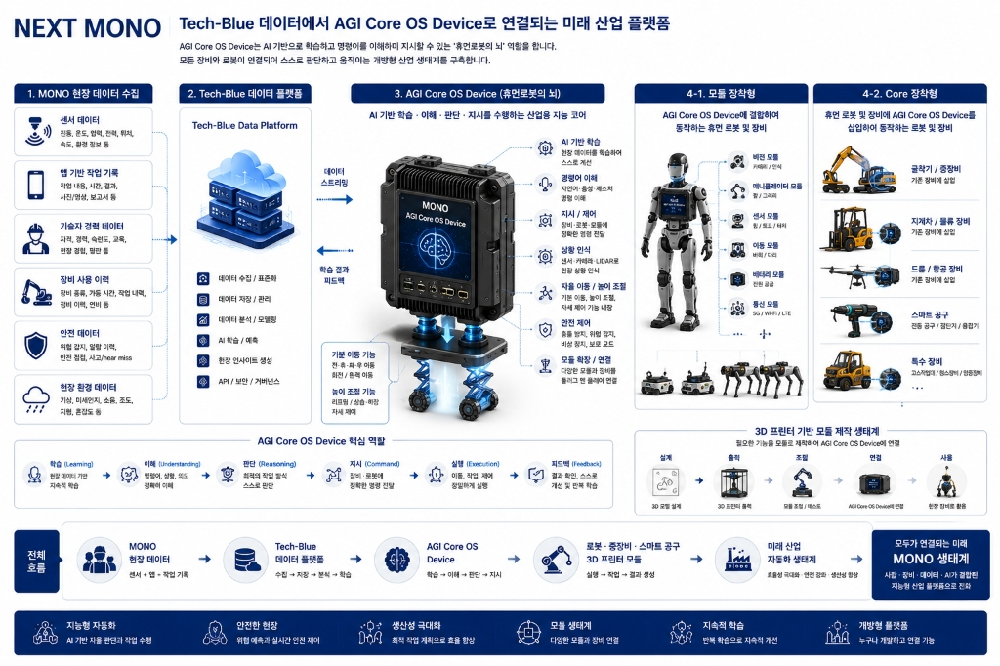
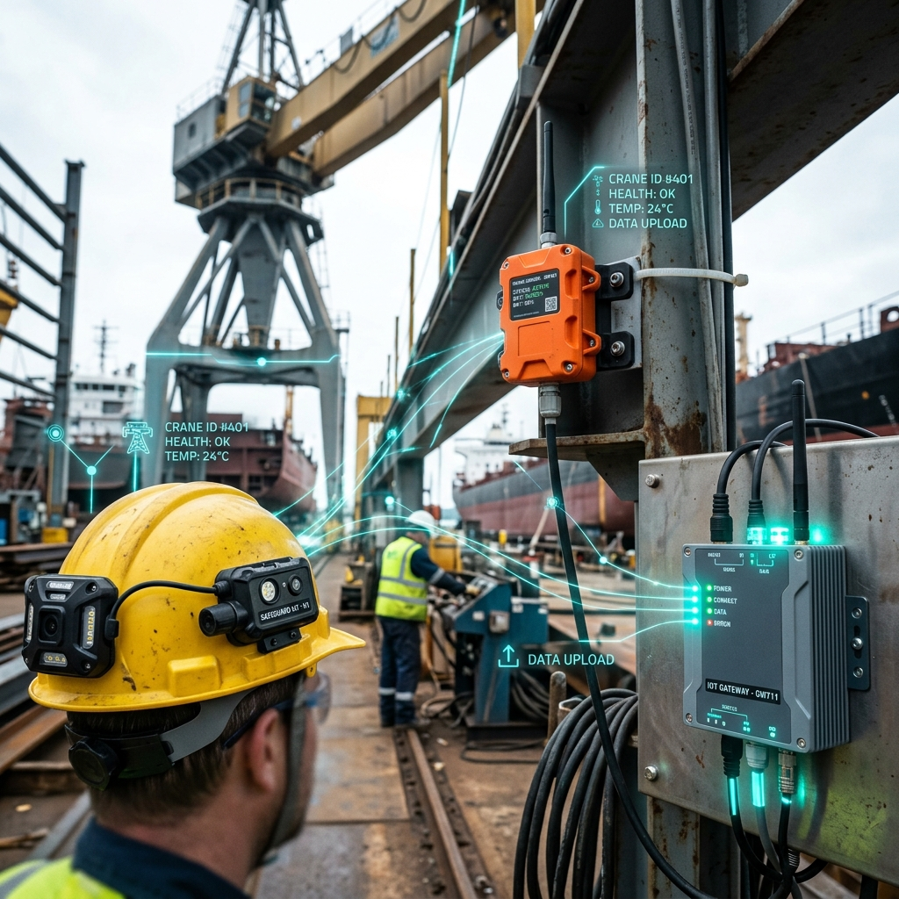

B2C
/ MONO Profile
MONO Profile
기술자의 경력·자격·안전교육·현장 경험을 신뢰 데이터로 축적합니다. 기술자는 자신의 이름과 이력으로 신뢰를 쌓고, 채용 기회, 금융, 보험, 교육, 글로벌 이직에 활용 가능한 평생 경력 자산을 만들 수 있습니다.
MONO는 건설·조선·플랜트 등 국가 핵심 기술노동 산업을 위한 통합 디지털 인력사무소이자 스마트 현장 플랫폼입니다.
기술자의 경력, 자격, 안전교육, 현장 경험, 장비 사용 이력을 신뢰 데이터로 축적하고, 기업의 채용 공고, 인력 운영, 장비·자재 관리, 협력사 운영 수요와 연결합니다. 기술자에게는 자신의 경력과 기술이 자산이 되는 평생 프로필을 제공하고, 기업에게는 검증 가능한 인력·현장 운영 데이터를 제공합니다. MONO는 기존 인력사무소 대체를 넘어, 산업 현장의 운영 데이터를 축적하는 상생 현장 운영 인프라로 확장합니다.
기술자의 경력 및 안전 데이터를 보증하여, 검증된 인력과 현장 자재/장비 운영 수요를 실시간 연결합니다.
기술자는 MONO Profile에 자신의 경력과 자격을 쌓고, 기업은 Partner Workspace에서 채용 공고와 현장 운영을 관리합니다.
MONO Field Operations는 공구·장비·자재·근무환경·교육 데이터를 연결합니다.
기술자의 경력·자격·안전교육·현장 경험을 신뢰 데이터로 축적합니다. 기술자는 자신의 이름과 이력으로 신뢰를 쌓고, 채용 기회, 금융, 보험, 교육, 글로벌 이직에 활용 가능한 평생 경력 자산을 만들 수 있습니다.
기업의 채용 공고, 기술자 검토, 인력 운영, 협력사 관리, PoC 협약을 일원화합니다. 원청과 하청 기업은 기술자 투입 현황, 안전교육 이력, 현장 작업 이력을 데이터로 확인하고 관리할 수 있습니다.
MONO Field Operations (공구·장비·자재·근무환경·교육을 연결하는 현장 운영 인프라)는 기업 현장의 공구 대여, 전문 장비·스마트 계측기 운영, 소모자재 반복 발주, 장비+기술자 패키지, 지역 산업 공급 파트너 연계를 하나로 관리합니다.
MONO Field Operations는 공구 대여, 전문 장비·스마트 계측기, 소모자재 반복 발주, 장비+기술자 패키지, 식사·숙소·근무환경, 교육 프로그램을 연결하는 현장 운영 인프라입니다. MONO Gear는 이 안에서 공구 대여와 전문 장비·스마트 계측기 운영을 담당하는 하위 서비스입니다.
MONO는 기술자가 일자리를 쉽게 찾고, 기업이 필요한 기술 인력을 쉽게 모집하며, 그 과정에서 산업 현장의 상생 데이터를 축적하는 스마트 현장 플랫폼입니다.
기술자의 경력, 자격, 안전교육, 장비 사용 이력은 신뢰 프로필로 축적되고, 기업의 채용 공고, 현장 투입, 장비·자재 운영 데이터는 기업 Workspace와 Field Operations로 연결됩니다.
삼성전자가 향후 5년간 5조원 규모 자금을 상생 사업에 투입한다. 27일 노동조합과 임금협약 타결 직후 나온 선언으로 대규모 사회적 투자로 분위기 전환을 꾀하는 동시에, 경영 쇄신 의지를 대내외에 천명한 것으로 해석된다.
삼성전자는 5년간 총 5조원을 투자 재원을 조성할 계획이다. 투자 방향을 크게 '상생 및 건전한 산업 인프라 조성'과 '미래 인재 육성' 두 축으로 제시했다. 구체적으로 2·3차 협력사 중심 중소기업 지원과 산업재해기금 조성, 취약계층·영세 자영업자를 위한 포용적 금융 확대 등을 검토 대상에 포함한다.
"대기업 원청이 수조 원을 들여 구축하려는 '상생 산업 인프라 조성'과 '미래 인재 육성'의 숙제, MONO 플랫폼 도입 하나로 완벽히 해결됩니다."
중대재해처벌법 대응, ESG 공시 의무화, 상생 협력법. 대기업이 매년 수조 원을 쏟아붓는 이 무거운 숙제들을 MONO B2B SaaS(기업용 업무관리 서비스)가 기술자 신뢰 데이터와 인력 운영 데이터 관리를 통해 단계적으로 해결해 나갑니다.
MONO가 대기업, 협력사, 기술자, 교육기관, 장비·자재 파트너를 연결하는 상생 데이터 인프라 역할을 보여줍니다.
건설·조선·플랜트 산업은 숙련 인력 확보와 세대 교체가 필요합니다.
외국인 노동자 의존만으로는 장기적인 기술 축적과 품질 관리에 한계가 있습니다.
대기업은 협력사 안전·교육·인재 육성·현장 운영 데이터를 더 투명하게 관리해야 합니다.
기술자가 일자리를 찾고 프로필을 등록하면 경력, 자격, 안전교육, 장비 사용 이력이 쌓입니다. 기업이 채용 공고를 등록하고 현장에 기술자를 투입하면 채용 수요, 현장 배치, 협력사 운영, 장비·자재 사용 데이터가 쌓입니다.
이 데이터는 기술자에게 금융·보험·교육 기회로 확장되고, 기업에게는 현장 운영 리포트와 안전관리 데이터가 됩니다.
장기적으로는 Tech-Blue (기술자 경험 기반 산업 기술화), AI 운영체제 (현장 데이터 기반 의사결정 지원), AGI Core OS (산업 지능화 비전)의 기반 데이터가 됩니다.

MONO의 라운드 전략은 앱 사용자를 먼저 대량 유입시키는 방식보다, 기업 협약과 채용 공고 등록을 먼저 확보해 기술자가 들어올 이유를 만드는 B2B 선행 전략을 우선합니다. 기업 공고, 현장 운영 수요, 장비 요청 데이터를 먼저 확보하고, 그 수요를 기반으로 기술자 프로필 작성과 재방문을 유도합니다.
먼저 기업 협약과 채용 공고 등록을 확보해 기술자가 들어올 이유를 만들고, 이후 기술자 프로필 작성, 경력 데이터 축적, 관심 기능 클릭, PoC 요청 데이터를 통해 시장 수요를 검증합니다.
이 전략은 초기 사용자 수보다 기업 수요가 실제로 존재하는지, 그리고 기술자가 자신의 경험을 데이터로 남길 의향이 있는지를 검증하는 데 초점을 둡니다.
모두의 창업 파이널 우승 이후, MONO는 단순 오디션 수상에 그치지 않고 대기업 상생 펀드 및 다양한 산업 분야의 전략적 투자자(SI)와 직접 연계하여 신뢰 데이터 인프라를 빠르게 스케일업합니다.
| 라운드 | 검증 방향 및 목표 |
|---|---|
| 1라운드 | MONO 철학, 문제 정의, 시장성, 전략 페이지 완성도 검증 |
| 2라운드 | 기술자 프로필 작성, 기업 공고 등록, 관심 기능 클릭 데이터 검증 |
| 3라운드 | 기업 협약, PoC, 전략 투자 후보군 확보 |
| 파이널 | 우승 이후 SI·VC·대기업 상생 투자 연결 전략 제시 |
| 투자·협업 대상 | MONO 연결 논리 |
|---|---|
| 삼성전자 및 대기업 상생 펀드 | 협력사 인력·안전·교육·현장 운영 데이터 인프라 구축 |
| 건설·조선·플랜트 원청사 | 협력사 기술자 신뢰 데이터 및 현업 운영 관리 연계 |
| 금융사 (은행/카드) | 근무이력 기반 대안 신용 등급, 맞춤형 보험, 에스크로 정산 |
| 보험사 | 안전교육 수료율, 현장 근무 이력, 장비 사용 데이터 기반 위험 분석 |
| 장비·자재 공급 대기업 | 장비·소모자재 운영 ERP 제공 및 B2B 조달 발주 연계 |
| 교육·자격 인증 기관 | 기술자 교육 이력 보증 및 수요 맞춤형 재교육 트랙 개설 |
단계별 타겟 검증 마일스톤을 실증하고 수집된 현장 데이터를 활용하여 Next MONO의 비전으로 스케일업합니다.
먼저 기술자 프로필과 기업 채용 공고로 신뢰 데이터를 만들고, 이후 기업 Workspace와 Field Operations를 통해 현장 운영 데이터를 축적합니다.
이 데이터가 충분히 쌓이면 금융·보험·교육, 대기업 상생 협업, 산업 데이터 리포트, Tech-Blue, AI 운영체제로 확장됩니다.
기술자 신뢰 프로필과 기업 채용 공고 등록망을 우선 구축하여 초기 수요 및 평판 축적 기반을 마련합니다.
기업용 Workspace 및 중대재해 예방, 외국인 기술인력 관리 SaaS 모듈을 연계하여 관리 비용을 낮춥니다.
MONO Gear ERP, 공구 대여, 스마트 장비 및 소모자재 운영 제어를 연동하여 현장 리소스를 통합 관제합니다.
금융·보험·교육·자격증 데이터 결합 및 국가 간 기술자 경력 인증과 비자 연계 등 글로벌 인력 운영으로 확장합니다.
Industrial Intelligence, AGI Core OS, 현장 AI 의사결정 보조 운영체제를 통해 완전히 자동화된 인프라로 도약합니다.
MONO Field Operations는 기술자의 인증 정보와 자산(프로필)을 기반으로, 오프라인 현장에 필요한 장비, 자재, 긴급 복구 네트워크를 체계적으로 묶어 하나의 거대한 현장 리소스 공유 플랫폼으로 스케일업하는 핵심 마일스톤입니다.
MONO의 수익 구조는 단순 일회성 중개를 넘어 다각화된 4대 핵심 매출 인프라를 바탕으로 고도화됩니다.
기술자 프로필과 기업 공고에서 시작한 데이터는 기업 Workspace 구독, Field Operations 운영 수수료, 장비·자재 거래, 금융·보험·교육 제휴, 대기업 상생 PoC, 산업 데이터 리포트로 확장됩니다.
즉 MONO는 사람을 연결하는 서비스에서 시작하지만, 수익은 반복 사용되는 현장 운영 데이터와 기업 협업 구조에서 만들어집니다.
초기에는 공구 대여와 전문 장비 수요를 검증하고, 이후 소모자재 반복 발주, 장비+기술자 패키지, 식사·숙소·교육 프로그램, 보험·정비·보증으로 확장합니다.
"MONO의 철학은 기술자의 경험을 낮은 단가의 노동력이 아니라, 산업의 신뢰 자산을 만드는 데서 시작합니다."
Masters of Noble Trades는 MONO가 기술자를 바라보는 기준입니다. 기술자의 경력, 현장 경험, 안전교육, 장비 사용 이력은 개인의 기록을 넘어 기업과 산업이 신뢰할 수 있는 데이터가 됩니다. MONO는 땀 흘려 가치를 일궈내는 전국의 모든 현장 기술 근로자들을 장인으로 우대합니다.
Masters of Noble Trades는 MONO가 기술자의 경험을 어떻게 바라보는지 보여주는 기준입니다.
기술자의 경력, 자격, 안전교육, 현장 경험, 장비 사용 이력은 개인의 기록을 넘어 기업과 산업이 신뢰할 수 있는 데이터가 됩니다.
Next MONO는 산업 현장의 신뢰 데이터를 기반으로 작동하는 Industrial Intelligence Platform입니다.
MONO가 축적하는 기술자 프로필, 기업 공고, 현장 배치, 안전교육, 장비 사용, 소모자재 발주, 정산 데이터는 장기적으로 산업 현장 의사결정을 지원하는 AI 운영체제의 기반이 됩니다. AGI Core OS는 현장의 사람을 대체하는 개념이 아니라, 기술자와 기업이 더 안전하고 효율적으로 일할 수 있도록 돕는 산업 의사결정 엔진입니다.
MONO가 오늘 축적하는 기술자 프로필, 기업 공고, 현장 배치, 안전교육, 장비 사용, 소모자재 발주, 근무환경 데이터가 장기적으로 산업 현장 의사결정을 지원하는 데이터 기반이 됩니다.
Tech-Blue는 이 데이터를 활용해 현장의 반복 문제를 기술로 해결하는 방향이며, AI 운영체제와 AGI Core OS는 이 데이터가 충분히 축적된 이후 도달할 수 있는 장기 비전입니다.
현장 경험, 안전 이력, 장비 운용 능력, AI 활용 역량을 함께 갖춘 새로운 블루칼라 기술 장인입니다.

기술자 데이터, 장비 데이터, 안전 데이터, 기업 요청 데이터를 기반으로 최적화된 매칭과 예측을 제공하는 보조 지능입니다.

작업자 웨어러블, 스마트 계측기, 안전 센서 및 장비 태그를 연동하여 가공되지 않은 현장 데이터를 실시간 수집합니다.